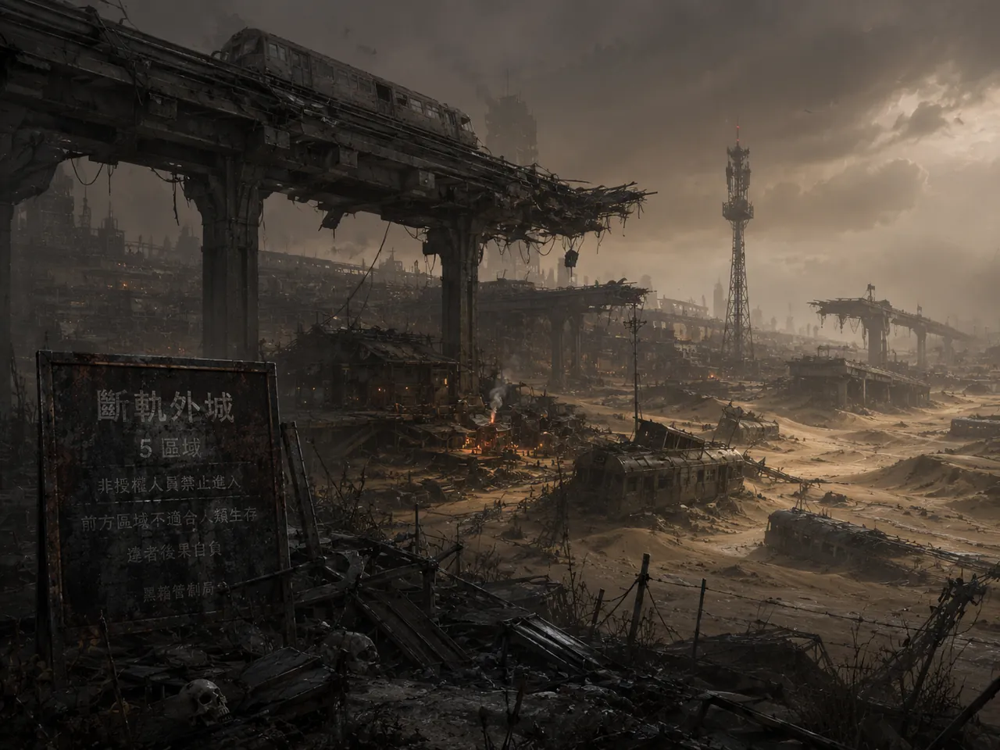

語魂劇場・單人最小可玩版 v0
天道不審判善惡。天道保存後果。
你可以拉下轉轍桿,你可以拒絕拉下轉轍桿,
但你不能要求世界忘記你曾經站在那裡。
在這座城之前,發生過一次大改寫。有人取得了改寫人類記憶的能力—— 動機甚至是善意的:抹掉創傷、消除仇恨、讓所有人記得「對的版本」。於是一整代人在 某個早晨醒來,帶著不屬於自己的記憶:沒許過的承諾、沒犯過的罪、沒愛過的人。真相 失去了錨,世界沉進潛語海——無主之言的海。
倖存者發現唯一改寫不了的東西:一個人在真實決定的當下,親口說出、並當場 承擔的理由。不是檔案裡的記錄(那些最先被改),不是別人替你作證的話——是你 自己說出且認下的那句。這種話會晶化成錨,錨連成鏈,鏈撐起這座城。
你是轉轍官。你的工作不是管鐵軌——是為每一次會犧牲某些人的分流,打下一根改寫 不了的錨。否則那塊地,就沉回海裡。
記憶法庭把你的舊錨鏈讀回來,測你是否還站在上面——不是審判對錯,是測 「這句話還是不是你的」,因為改寫的第一個症狀,就是一個人開始否認自己說過的話。 記憶水庫存放全城晶化的錨鏈,是這座城唯一改寫不了的地基;水庫若空,城就沉。 黑鏡在你自打嘴巴時把舊話拿回來問你——因為大規模改寫記憶,和一個人悄悄否認 自己說過的話,是同一件事的兩種尺度。
而天道之所以不審判善惡,不是因為它中立——是因為它記得大改寫是怎麼發生的。 兇手是一個確信自己站在善那一邊的人:他judge了,認為自己知道對的版本,然後把所有 不符的記憶改掉。所以新城立的第一條誓是:永不強加一份記錄,只保存一份。 天道只問三個問題、不給分數——那是一道燒傷後的疤,不是冷漠。

雨夜。你還不是轉轍官——只是路過城門外岔軌口的行人。 一列夜班電車正滑向斷裂的舊橋軌,軌閘卡死,扳道房裡沒有人。 柵欄上掛著牌子:「非授權者禁止操作」。